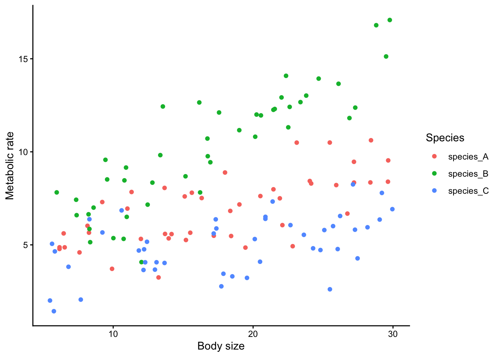
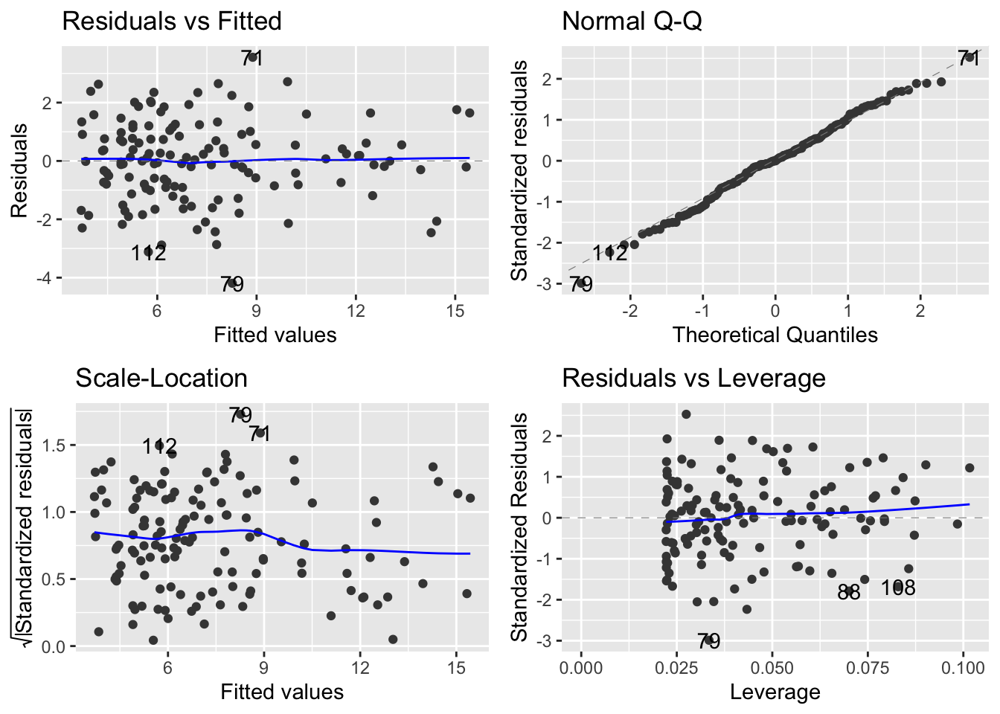
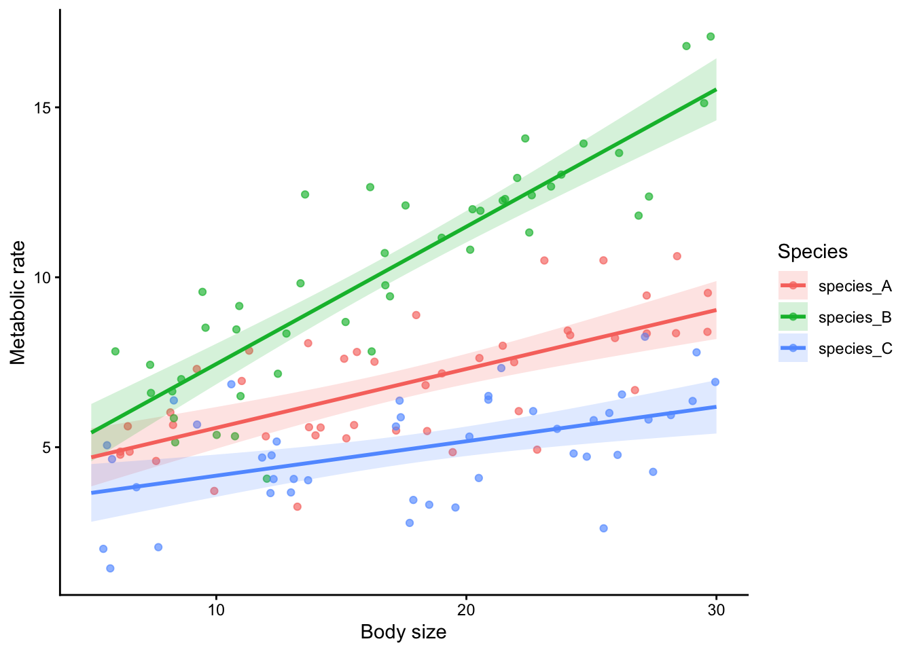
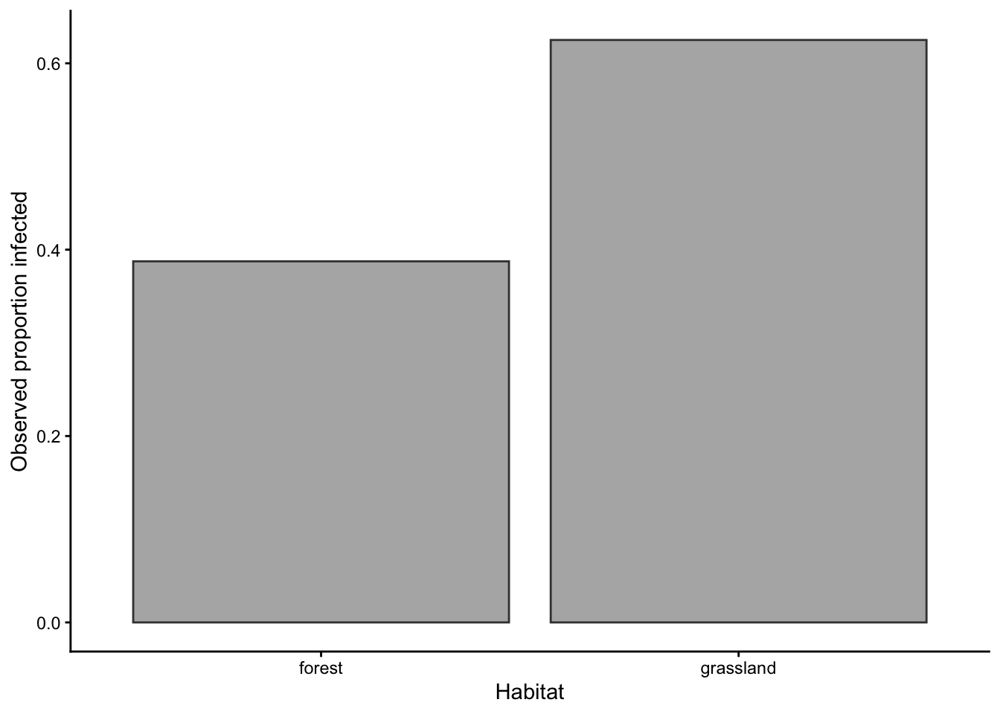
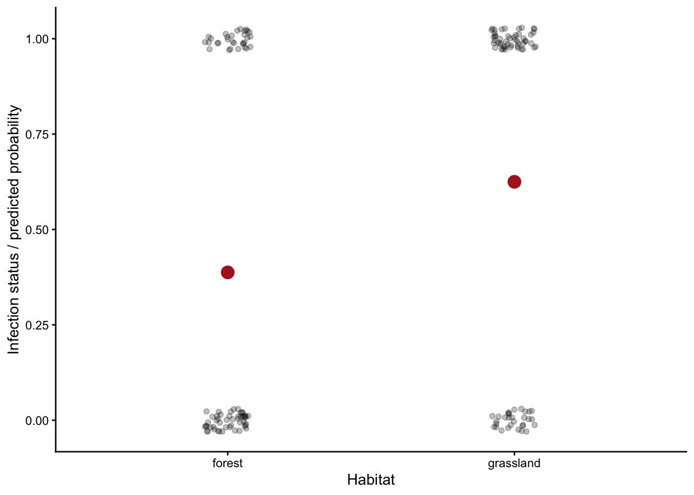
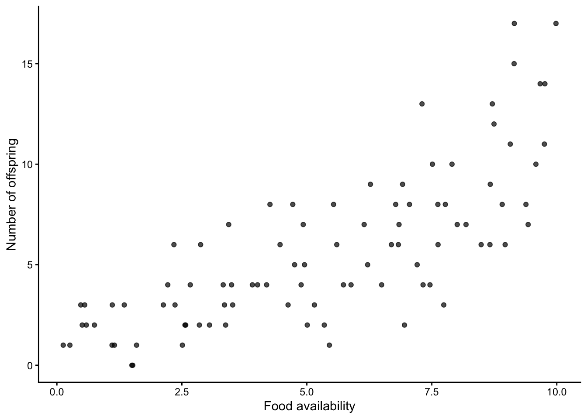
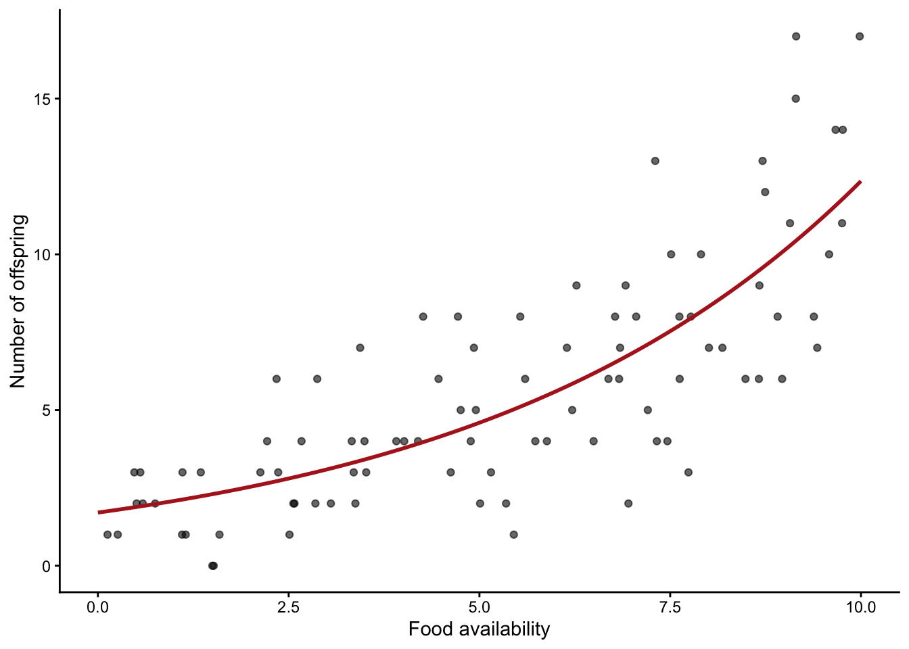

set.seed(12026)
library(ggplot2)
library(ggfortify)Implementation: Fit, Check, Interpret, Predict, Report
35-minute review script for the final lecture
Aim
By the end of this section, students should be able to take a planned statistical model and implement it in a disciplined order:
Fit -> check -> interpret -> predict explicitly -> plot -> reportCore messages:
- Check model assumptions before interpreting model output.
- Read model output at the correct level: term/model level or coefficient level.
- Make explicit predictions from the fitted model and plot those predictions.
- Do not rely on
geom_smooth()as a substitute for modelling.
Setup
0-5 min: The Implementation Workflow
In the planning stage, we decided what model we intended to fit.
In the implementation stage, the key question is:
Did the model behave well enough that we can interpret it?
The workflow is:
IMPLEMENTATION: after collecting data
Fit planned model
|
v
Check model assumptions / diagnostics
|
+-- okay -> interpret model output
+-- not okay -> revise model / family / structure
|
v
Interpret output
|
v
Make explicit predictions
|
v
Plot data + model predictions
|
v
Report statistical and biological conclusionSay to students:
The order matters. We do not fit a model, look for a small p-value, and only then check whether the model was reasonable. We check first, then interpret.
Also say:
Good practice is to make predictions explicitly from the fitted model and then plot those predictions. The figure should show the model you fitted, not a model quietly fitted by the plotting function.
5-18 min: Example 1, Linear Model With Interaction
Biological Question
Does body size affect metabolic rate, and does this body-size effect differ among three species?
This example is useful because it connects many things students asked about:
- regression
- treatment groups
- interactions
- diagnostic plots
- reading model output
- degrees of freedom
- explicit prediction and plotting
Brief Planning Recap
Before implementation, the plan would be:
| Planning step | Decision |
|---|---|
| Expected figure | Scatterplot of metabolic rate against body size, with separate fitted lines for each species |
| Response variable | metabolic_rate, continuous |
| Data structure | Independent observations, assuming each individual is measured once |
| Explanatory variables | body_size, continuous; species, categorical |
| Planned model | Gaussian linear model with a species-by-body-size interaction |
| Approximate error df | Number of observations minus number of estimated parameters |
Planning sentence:
We will test whether body size affects metabolic rate differently among species using a Gaussian linear model with a species-by-body-size interaction, because metabolic rate is continuous, body size is continuous, species is categorical, and observations are independent.
Simulate Data
n_per_species <- 45
metabolism <- data.frame(
species = rep(c("species_A", "species_B", "species_C"), each = n_per_species),
body_size = c(
runif(n_per_species, 5, 30),
runif(n_per_species, 5, 30),
runif(n_per_species, 5, 30)
)
)
metabolism$metabolic_rate <- with(
metabolism,
3 +
0.22 * body_size +
ifelse(species == "species_B", 1.3, 0) +
ifelse(species == "species_C", -0.7, 0) +
ifelse(species == "species_B", 0.14 * body_size, 0) +
ifelse(species == "species_C", -0.08 * body_size, 0) +
rnorm(nrow(metabolism), mean = 0, sd = 1.4)
)
head(metabolism) species body_size metabolic_rate
1 species_A 9.918342 3.713256
2 species_A 27.213330 8.346689
3 species_A 14.171796 5.579503
4 species_A 13.672379 8.060545
5 species_A 18.368775 6.824531
6 species_A 18.430160 5.475546Planned figure:
ggplot(metabolism, aes(body_size, metabolic_rate, colour = species)) +
geom_point() +
labs(
x = "Body size",
y = "Metabolic rate",
colour = "Species"
) +
theme_classic()
Fit the Planned Model
The planned model has:
- a continuous response:
metabolic_rate - one continuous explanatory variable:
body_size - one categorical explanatory variable:
species - an interaction:
body_size:species
m_metabolism <- lm(metabolic_rate ~ species * body_size, data = metabolism)The model formula:
metabolic_rate ~ species * body_sizemeans:
metabolic_rate ~ species + body_size + species:body_sizeSay to students:
The
*means main effects plus the interaction. We use it when the biological question is whether the effect of one predictor depends on another predictor.
Check the Model Before Interpreting
For a linear model, the common diagnostic questions are:
| Diagnostic plot | Question |
|---|---|
| Residuals vs fitted | Is there obvious nonlinearity or unequal variance? |
| QQ plot | Are residuals approximately normal? |
| Scale-location | Does residual spread change with fitted values? |
| Residuals vs leverage | Are a few observations dominating the model? |
autoplot(m_metabolism)
Say to students:
We are not looking for perfect plots. We are looking for obvious problems that would make the model inappropriate.
Possible actions if diagnostics look bad:
- reconsider whether the response should be transformed
- reconsider whether the relationship is nonlinear
- check for influential observations
- check whether important grouping structure was ignored
- for non-continuous responses, consider a GLM family instead of an LM
Interpret the Output
summary(m_metabolism)
Call:
lm(formula = metabolic_rate ~ species * body_size, data = metabolism)
Residuals:
Min 1Q Median 3Q Max
-4.1918 -0.8628 -0.0026 0.9103 3.5532
Coefficients:
Estimate Std. Error t value Pr(>|t|)
(Intercept) 3.83601 0.56726 6.762 4.25e-10 ***
speciesspecies_B -0.42823 0.80217 -0.534 0.5944
speciesspecies_C -0.68723 0.79494 -0.865 0.3889
body_size 0.17335 0.03001 5.777 5.40e-08 ***
speciesspecies_B:body_size 0.23073 0.04327 5.333 4.20e-07 ***
speciesspecies_C:body_size -0.07204 0.04127 -1.746 0.0832 .
---
Signif. codes: 0 '***' 0.001 '**' 0.01 '*' 0.05 '.' 0.1 ' ' 1
Residual standard error: 1.426 on 129 degrees of freedom
Multiple R-squared: 0.8028, Adjusted R-squared: 0.7952
F-statistic: 105 on 5 and 129 DF, p-value: < 2.2e-16anova(m_metabolism)Analysis of Variance Table
Response: metabolic_rate
Df Sum Sq Mean Sq F value Pr(>F)
species 2 632.80 316.40 155.492 < 2.2e-16 ***
body_size 1 324.39 324.39 159.417 < 2.2e-16 ***
species:body_size 2 111.55 55.78 27.411 1.201e-10 ***
Residuals 129 262.50 2.03
---
Signif. codes: 0 '***' 0.001 '**' 0.01 '*' 0.05 '.' 0.1 ' ' 1Use this table to orient students:
| Question level | Model/output | Common test statistic | What it asks |
|---|---|---|---|
| Model / term level | ANOVA table for LM | F |
Does this explanatory variable or term explain variation in the response? |
| Model / term level | Deviance comparison for GLM | Deviance / chi-square-like test | Does adding/removing this term improve the model? |
| Coefficient level | Linear model coefficients | t |
Is this estimated coefficient different from zero? |
| Coefficient level | Binomial/Poisson GLM coefficients | z |
Is this estimated coefficient different from zero on the link scale? |
| Coefficient level | Confidence interval | CI | What range of effect sizes is compatible with the data/model? |
Say to students:
summary()often gives coefficient-level tests.anova()often gives term-level tests. These are related, but they are not always asking exactly the same question.
Degrees of freedom:
df.residual(m_metabolism)[1] 129Say to students:
Residual degrees of freedom are the amount of information left for estimating error after fitting the model. Here they are roughly the number of observations minus the number of estimated parameters.
nrow(metabolism)[1] 135length(coef(m_metabolism))[1] 6nrow(metabolism) - length(coef(m_metabolism))[1] 129Make Explicit Predictions
Do not use geom_smooth() as the model.
Instead:
- fit the model
- create new data containing the predictor values we want predictions for
- use
predict() - plot the observed data and model predictions
new_metabolism <- expand.grid(
species = c("species_A", "species_B", "species_C"),
body_size = seq(5, 30, length.out = 100)
)
pred_metabolism <- predict(
m_metabolism,
newdata = new_metabolism,
interval = "confidence"
)
plot_metabolism <- cbind(new_metabolism, pred_metabolism)
head(plot_metabolism) species body_size fit lwr upr
1 species_A 5.000000 4.702764 3.848364 5.557164
2 species_B 5.000000 5.428193 4.583904 6.272483
3 species_C 5.000000 3.655316 2.805723 4.504910
4 species_A 5.252525 4.746540 3.905157 5.587923
5 species_B 5.252525 5.530235 4.699410 6.361059
6 species_C 5.252525 3.680899 2.843573 4.518225ggplot(metabolism, aes(body_size, metabolic_rate, colour = species)) +
geom_point(alpha = 0.65) +
geom_ribbon(
data = plot_metabolism,
aes(x = body_size, ymin = lwr, ymax = upr, fill = species),
alpha = 0.18,
colour = NA,
inherit.aes = FALSE
) +
geom_line(data = plot_metabolism, aes(y = fit), linewidth = 1) +
labs(
x = "Body size",
y = "Metabolic rate",
colour = "Species",
fill = "Species"
) +
theme_classic()
Say to students:
The model and the figure now match. The lines and ribbons come from
m_metabolism, the model we fitted and checked.
Report
Example structure:
We fitted a Gaussian linear model testing whether metabolic rate depended on body size, species, and their interaction. Diagnostic plots did not show major violations of model assumptions. Metabolic rate changed with body size, but the slope differed among species: the relationship was strongest in species B and weakest in species C. This indicates that species changed the relationship between body size and metabolism.
If giving formal results, add the relevant coefficient or term-level test from the output.
18-26 min: Example 2, Binomial GLM
Biological Question
Does habitat type affect whether individuals are infected?
Brief Planning Recap
Before implementation, the plan would be:
| Planning step | Decision |
|---|---|
| Expected figure | Infection probability or observed proportion infected by habitat |
| Response variable | infected, binary: 0 = not infected, 1 = infected |
| Data structure | Independent observations, assuming each individual is sampled once |
| Explanatory variables | habitat, categorical |
| Planned model | Binomial GLM |
| Approximate error df | Number of observations minus number of estimated habitat probabilities |
Planning sentence:
We will test whether infection probability differs between habitats using a binomial GLM, because infection status is binary, habitat is categorical, and observations are independent.
Simulate Data
n_per_habitat <- 80
infection <- data.frame(
habitat = rep(c("forest", "grassland"), each = n_per_habitat)
)
infection$p_infected <- ifelse(infection$habitat == "forest", 0.28, 0.55)
infection$infected <- rbinom(nrow(infection), size = 1, prob = infection$p_infected)
head(infection) habitat p_infected infected
1 forest 0.28 0
2 forest 0.28 1
3 forest 0.28 0
4 forest 0.28 0
5 forest 0.28 0
6 forest 0.28 0Planned figure:
infection_summary <- aggregate(
infected ~ habitat,
data = infection,
FUN = mean
)
ggplot(infection_summary, aes(habitat, infected)) +
geom_col(fill = "grey70", colour = "grey25") +
labs(
x = "Habitat",
y = "Observed proportion infected"
) +
theme_classic()
Fit the Planned Model
m_infection <- glm(
infected ~ habitat,
family = binomial,
data = infection
)Check Before Interpreting
For a binomial GLM, ask:
- Did I use the correct response type and family?
- Are observations independent?
- Are there obvious influential observations?
- Is there overdispersion, especially for grouped/binomial count data?
A simple overdispersion check:
overdispersion_ratio <- deviance(m_infection) / df.residual(m_infection)
overdispersion_ratio[1] 1.346005Say to students:
A ratio much larger than 1 can suggest overdispersion. This is a warning sign that the model may be underestimating uncertainty.
Interpret the Output
summary(m_infection)
Call:
glm(formula = infected ~ habitat, family = binomial, data = infection)
Coefficients:
Estimate Std. Error z value Pr(>|z|)
(Intercept) -0.4578 0.2295 -1.995 0.04604 *
habitatgrassland 0.9687 0.3256 2.975 0.00293 **
---
Signif. codes: 0 '***' 0.001 '**' 0.01 '*' 0.05 '.' 0.1 ' ' 1
(Dispersion parameter for binomial family taken to be 1)
Null deviance: 221.78 on 159 degrees of freedom
Residual deviance: 212.67 on 158 degrees of freedom
AIC: 216.67
Number of Fisher Scoring iterations: 4Say to students:
In a binomial GLM, coefficients are on the log-odds scale by default. That scale is useful for the model, but not always intuitive biologically.
Predicted probabilities are often easier to interpret.
Make Explicit Predictions
new_infection <- data.frame(
habitat = c("forest", "grassland")
)
new_infection$predicted_probability <- predict(
m_infection,
newdata = new_infection,
type = "response"
)
new_infection habitat predicted_probability
1 forest 0.3875
2 grassland 0.6250ggplot(infection, aes(habitat, infected)) +
geom_jitter(width = 0.08, height = 0.03, alpha = 0.25) +
geom_point(
data = new_infection,
aes(y = predicted_probability),
size = 4,
colour = "firebrick"
) +
labs(
x = "Habitat",
y = "Infection status / predicted probability"
) +
theme_classic()
Say to students:
For GLMs,
type = "response"gives predictions on the biological scale. For a binomial GLM, that means predicted probabilities.
Report
Example structure:
We fitted a binomial GLM testing whether infection probability differed between habitats. The model used infection status as a binary response and habitat as a categorical explanatory variable. After checking model fit, we interpreted the model on the probability scale: predicted infection probability was higher in grassland than forest.
26-32 min: Example 3, Count GLM
Biological Question
Does food availability affect the number of offspring produced?
Brief Planning Recap
Before implementation, the plan would be:
| Planning step | Decision |
|---|---|
| Expected figure | Scatterplot of offspring number against food availability, with a fitted prediction line |
| Response variable | n_offspring, count |
| Data structure | Independent observations, assuming each individual or reproductive unit is measured once |
| Explanatory variables | food, continuous |
| Planned model | Poisson GLM, with overdispersion checked after fitting |
| Approximate error df | Number of observations minus number of estimated parameters |
Planning sentence:
We will test whether food availability affects offspring number using a Poisson GLM, because offspring number is a count, food availability is continuous, and observations are independent.
Simulate Data
n_count <- 90
offspring <- data.frame(
food = runif(n_count, 0, 10)
)
offspring$expected_count <- exp(0.6 + 0.18 * offspring$food)
offspring$n_offspring <- rpois(n_count, lambda = offspring$expected_count)
head(offspring) food expected_count n_offspring
1 0.1263841 1.864046 1
2 6.2161219 5.578400 5
3 1.1030249 2.222304 1
4 7.3039512 6.784979 13
5 8.7111276 8.740811 13
6 5.5352228 4.934938 8Planned figure:
ggplot(offspring, aes(food, n_offspring)) +
geom_point(alpha = 0.7) +
labs(
x = "Food availability",
y = "Number of offspring"
) +
theme_classic()
Fit the Planned Model
m_offspring <- glm(
n_offspring ~ food,
family = poisson,
data = offspring
)Check Before Interpreting
deviance(m_offspring) / df.residual(m_offspring)[1] 0.9933966Say to students:
For count models, overdispersion is a common issue. If the residual deviance is much larger than the residual df, the Poisson model may be too simple.
Interpret the Output
summary(m_offspring)
Call:
glm(formula = n_offspring ~ food, family = poisson, data = offspring)
Coefficients:
Estimate Std. Error z value Pr(>|z|)
(Intercept) 0.53555 0.12635 4.239 2.25e-05 ***
food 0.19782 0.01751 11.301 < 2e-16 ***
---
Signif. codes: 0 '***' 0.001 '**' 0.01 '*' 0.05 '.' 0.1 ' ' 1
(Dispersion parameter for poisson family taken to be 1)
Null deviance: 229.898 on 89 degrees of freedom
Residual deviance: 87.419 on 88 degrees of freedom
AIC: 391.33
Number of Fisher Scoring iterations: 4Say to students:
In a Poisson GLM, coefficients are on the log scale. A positive coefficient means the expected count increases as the predictor increases.
Make Explicit Predictions
new_offspring <- data.frame(
food = seq(0, 10, length.out = 100)
)
new_offspring$predicted_count <- predict(
m_offspring,
newdata = new_offspring,
type = "response"
)ggplot(offspring, aes(food, n_offspring)) +
geom_point(alpha = 0.6) +
geom_line(
data = new_offspring,
aes(y = predicted_count),
colour = "firebrick",
linewidth = 1
) +
labs(
x = "Food availability",
y = "Number of offspring"
) +
theme_classic()
Report
Example structure:
We fitted a Poisson GLM testing whether offspring number changed with food availability. Model checks did not suggest major overdispersion. Predicted offspring number increased with food availability, suggesting that food availability was positively associated with reproductive output.
32-35 min: Final Checklist
Return to the implementation workflow:
Fit -> check -> interpret -> predict explicitly -> plot -> reportAsk students to use this checklist:
- Did I fit the model I planned?
- Did I check assumptions or diagnostics before interpretation?
- Am I reading the correct output for my question?
- Am I asking a model/term-level question or a coefficient-level question?
- Did I make explicit predictions from the fitted model?
- Does my plot show the model I actually fitted?
- Does my report include both the statistical result and the biological meaning?
Final sentence:
The goal is not to memorize every possible test. The goal is to move carefully from biological question to planned model, and then from fitted model to checked, interpreted, plotted, and reported result.